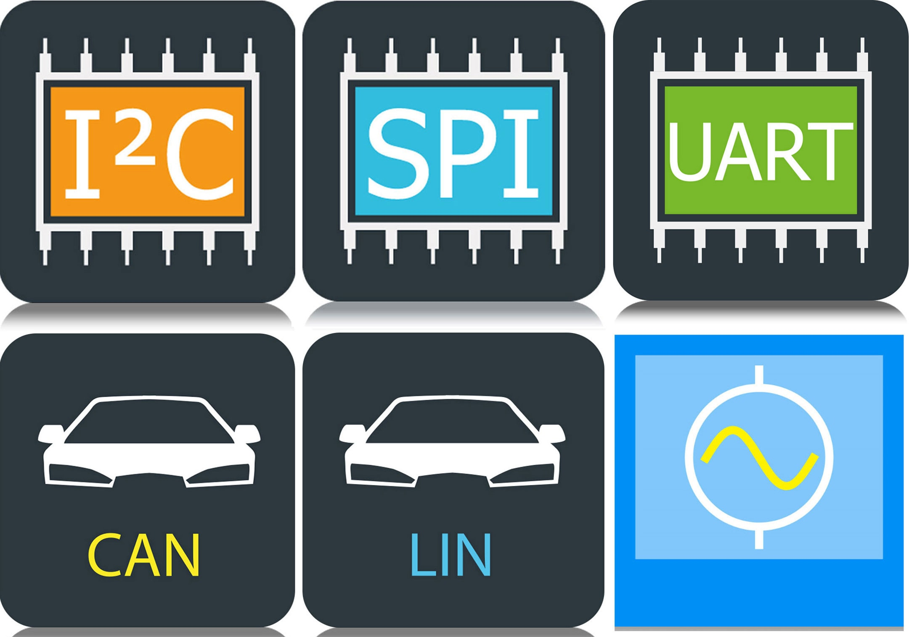
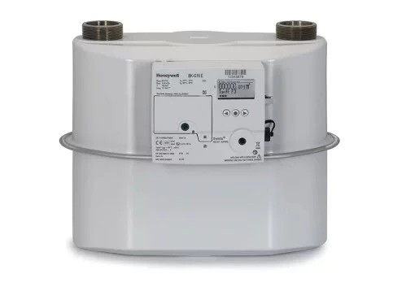
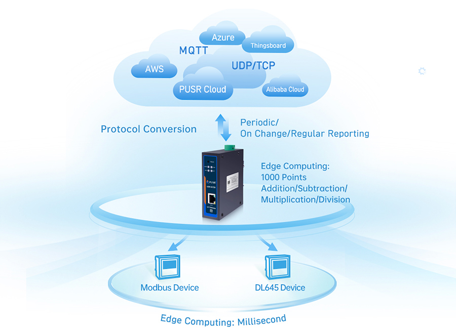

Professional Journey
Master Thesis
HILTI Entwicklungsgesellschaft mbH | Jul 2025 - Jan 2026
- Title: Quantitative Evaluation of Acceleration Techniques for Digital Signal Processing: A Case Study on Hilti Applications
- Achieved nearly 2x performance improvement using CMSIS-SIMD intrinsics on ARM Cortex-M4 for filtering tasks in motor control algorithms.
- Entirely offloaded CPU by implementing filtering algorithms using hardware accelerators (FMAC, CORDIC) on STM32H7/G4 microcontrollers.
Intern Embedded Software Developer
HILTI Entwicklungsgesellschaft mbH | Jan 2025 - Jul 2025
- Developed low-level firmware and hardware abstraction layers in C/C++ for industrial power tools.
- Developed custom Python scripts to automate regression testing and firmware validation, significantly reducing manual effort and ensuring module stability during integration.
- Reduced static analysis violations by 80% through modular restructuring, ensuring strict adherence to MISRA C standards.
- Improved software reliability by implementing UNITY unit tests, leading to a 40% reduction in development-phase defects.
- Optimized CI/CD workflows by migrating pipelines to GitLab, resulting in 30% faster build times.
Embedded Software/Firmware Developer
Seleon GmbH | May 2024 - Nov 2024
- Designing firmware for STM32 microcontrollers using C/C++.
- Unit testing firmware functionality with Google Test framework.
- Collaborating with cross-functional teams to define software requirements.
Intern Embedded Software Engineer
Honeywell Elster GmbH | Oct 2023 - Apr 2024
- Developed state machines and control algorithms for NBIoT communication.
- Built a test environment using MATLAB/Simulink for NB-IoT system validation.
Personal Projects
Technical implementations and hardware innovations.

Driver Dev for STM32F407xx
Low-level driver development for I2C, SPI, and UART communication protocols. Built from scratch for STM32F407VG.

NB-IoT Test Environment
Simulation and evaluation of NB-IoT communication protocols for smart gas meter applications using MATLAB/Simulink.

Smart Parking Assistance
Distance measurement system based on ultrasonic sensors with real-time feedback and obstacle detection logic.

Industrial-IoT Gateway
High-performance IIoT Edge Gateway on STM32F767ZI with FreeRTOS, LwIP, and MbedTLS for secure cloud telemetry and system dependability.

SecureBoot-STM32
Secure bootloader implementation for STM32 microcontrollers with firmware authentication, integrity verification, and cryptographic protection.
Technical Ecosystem
C/C++
Python
C#
MATLAB/Simulink
32-bit ARM Architecture
ARM Cortex-M
STM32
FreeRTOS
Bare Metal
HAL/LL
UART
SPI
I2C
CAN
Oscilloscope
Logic Analyzer
JTAG/SWD
Git
GitLab
Docker
Meson/Ninja
STM32CubeIDE
VS Code
Keil MDK
Jenkins
MISRA-C
Unity Testing
UML
PCB Design
LaTeX
Certifications
-
Mastering Microcontrollers
Embedded Driver Development (GPIO, I2C, SPI, UART)
-
FreeRTOS on STM32
Real-Time Kernels & Task Scheduling
Education
M.Sc. in Embedded Systems
TU Chemnitz, Germany
Bachelors in Electrical and Electronics Engineering
JB Institute of Engineering & Tech
Let's Connect
I'm currently open for professional opportunities and collaborative projects.